Tundra Ártica
Região de clima extremo no norte, com vegetação rasteira e solos congelados.
Escolha um país ou assunto:
Para localizar uma palavra no texto, use Ctrl+F no computador.

Natureza e Biomas
O Canadá caracteriza-se por sua vasta extensão territorial, clima subártico e frio, além de formações montanhosas e extensos ecossistemas florestais e lacustres.
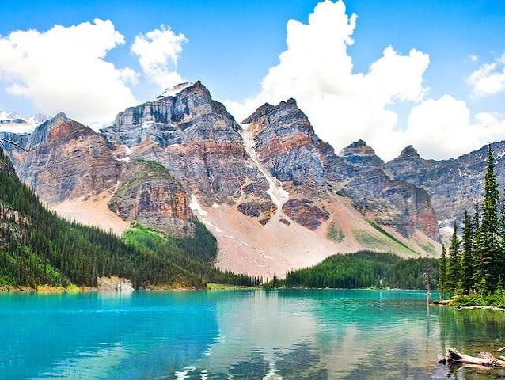
Região de clima extremo no norte, com vegetação rasteira e solos congelados.

Extensa faixa de floresta de coníferas que atravessa o país.
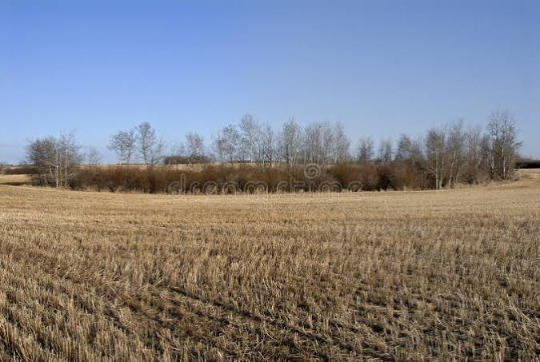
Planícies abertas dominadas por gramíneas e clima temperado seco.
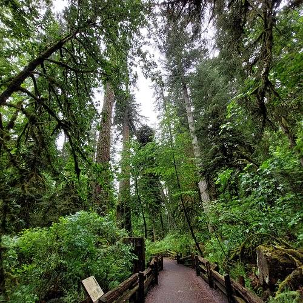
Florestas caducifólias marcadas por mudanças foliares sazonais no outono.
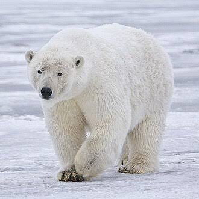
Predador adaptado às regiões árticas e ao ambiente marinho glacial.
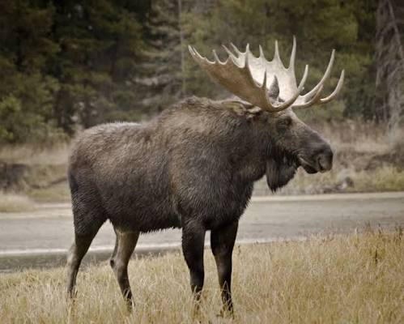
Maior espécie de cervídeo, caracterizado por sua estrutura e galhadas robustas.
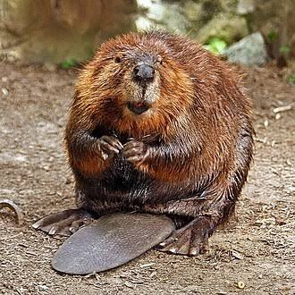
Roedor semiaquático reconhecido por alterar ecossistemas ao construir represas.
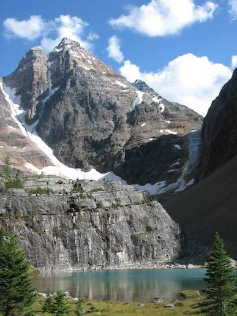
Cadeia de montanhas com picos elevados e lagos de origem glacial.
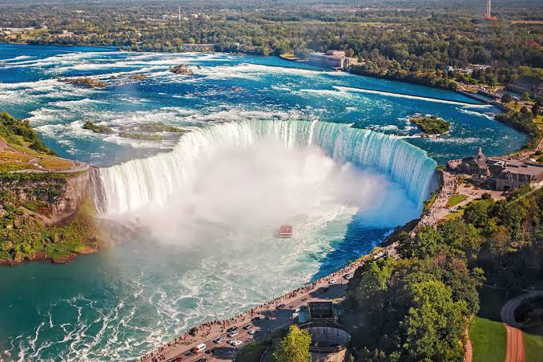
Conjunto de grandes quedas-d'água na fronteira com os Estados Unidos.
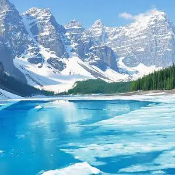
Corpos d'água de origem glacial sujeitos a congelamento severo no inverno.
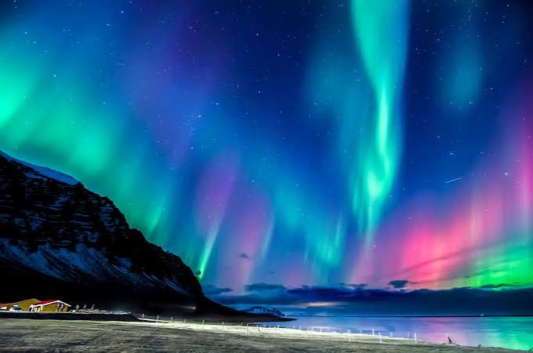
Fenômeno atmosférico visível nas latitudes do norte.
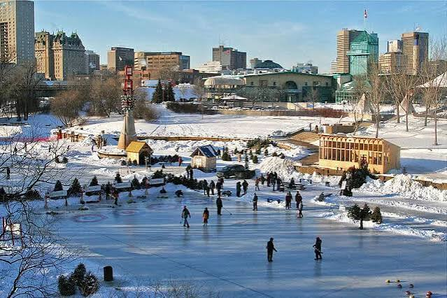
Cobertura de neve característica durante o inverno.
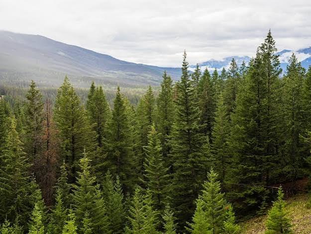
Densa vegetação adaptada a baixas temperaturas.
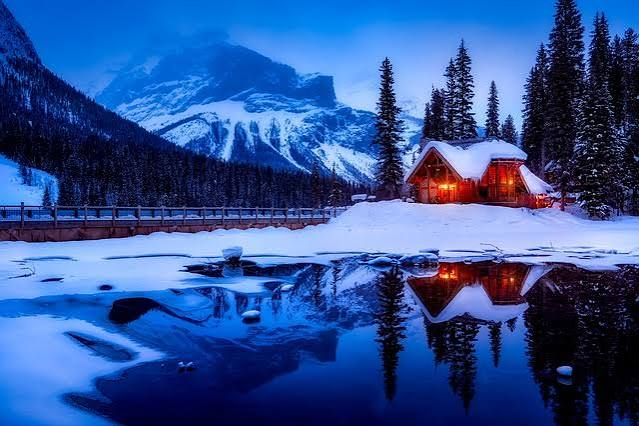
Temperaturas de inverno podem atingir marcas inferiores a -30 °C em certas regiões.
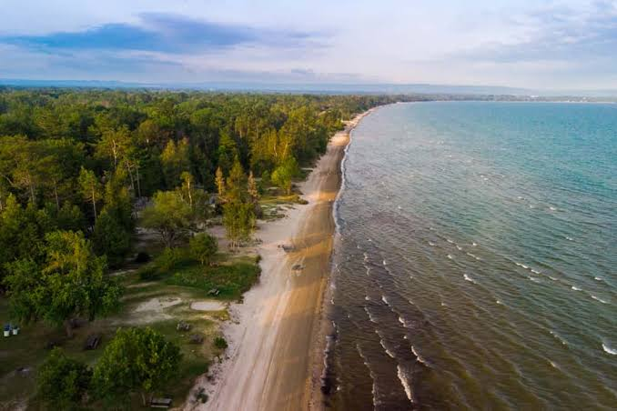
Possui a maior extensão de linha costeira contínua do planeta.
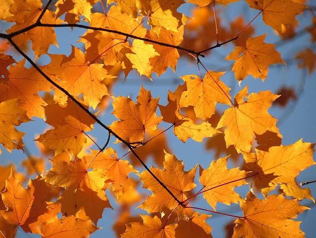
Extraído da seiva do bordo, árvore símbolo nacional da bandeira canadense.